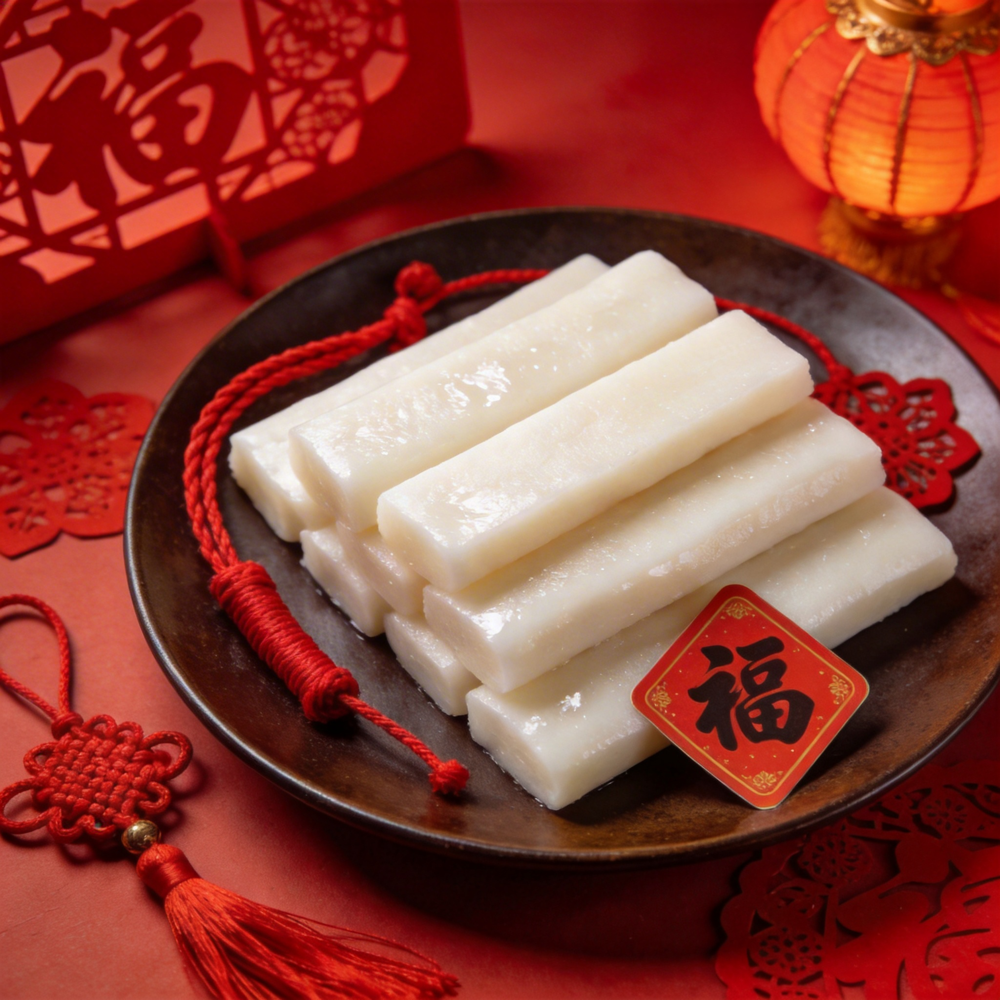
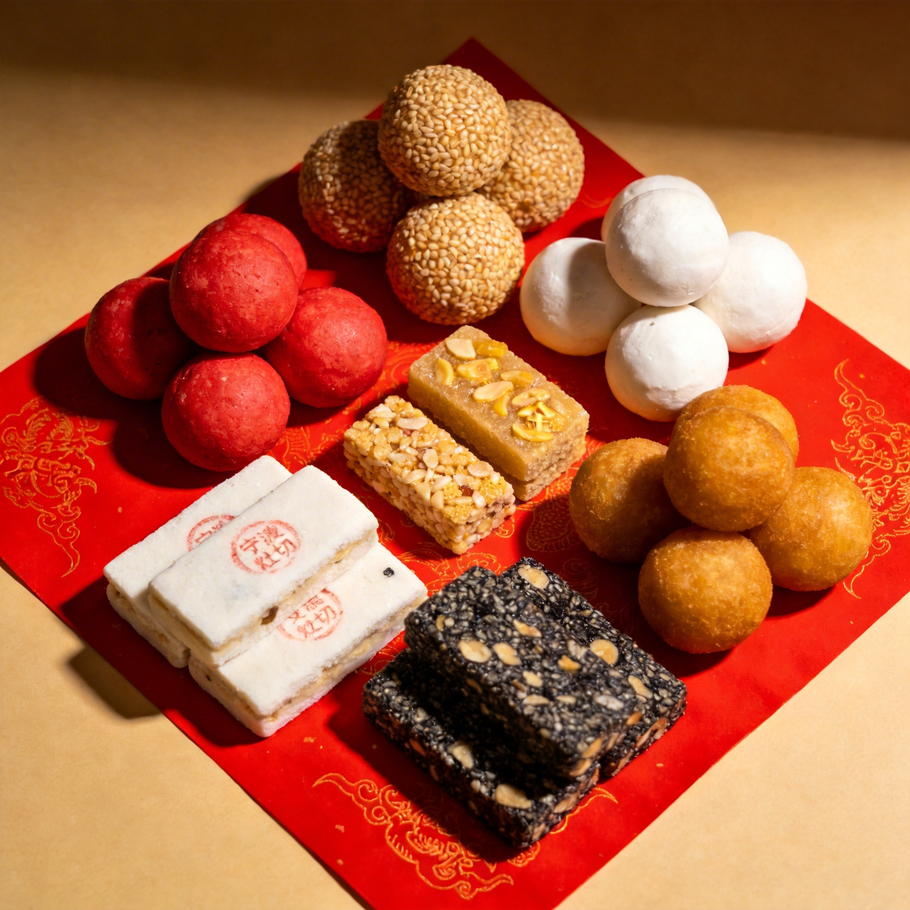
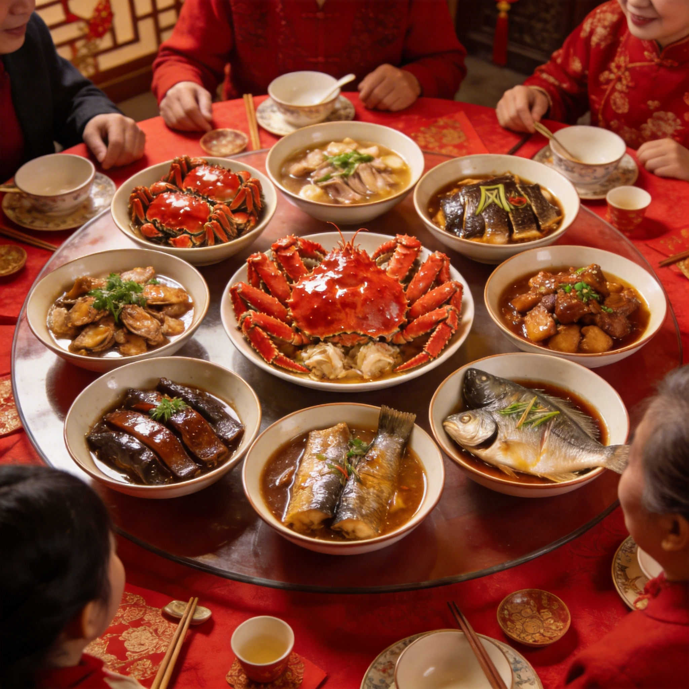
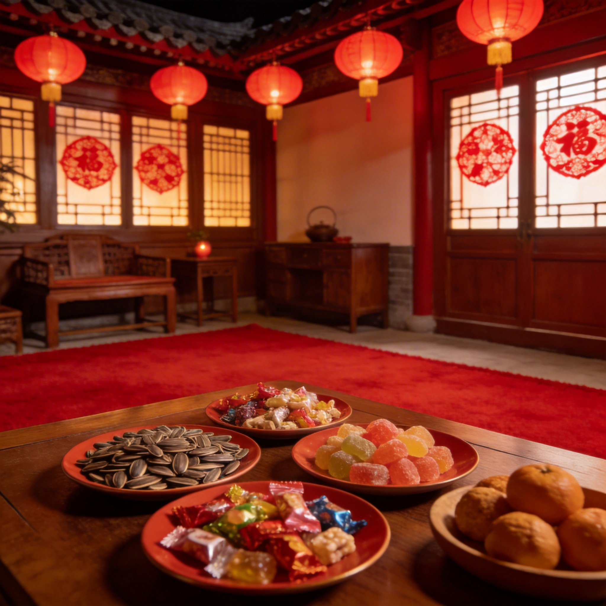
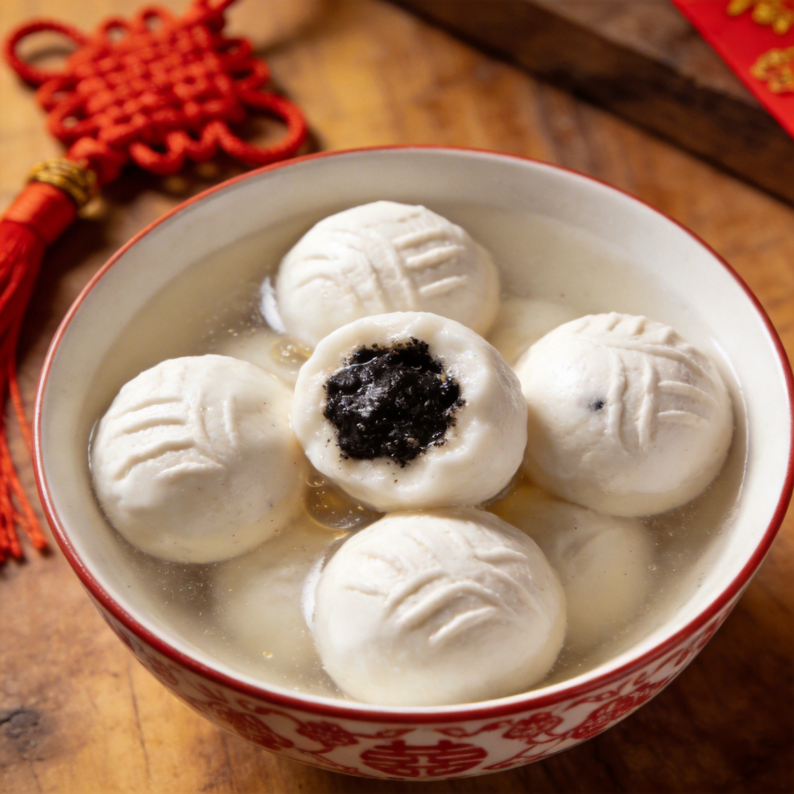
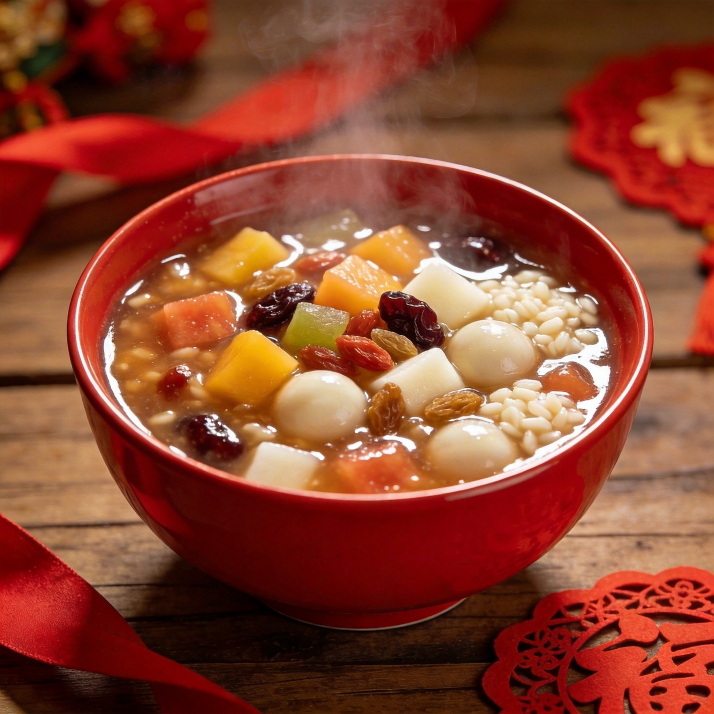

感受七千年河姆渡文化传承，体验甬城独特的春节民俗风情
追溯宁波春节的传统习俗，感受浓厚的文化底蕴
宁波老话："冬至大如年，皇帝老倌也谢年"。冬至日要吃大头菜年糕、煮番薯汤果、吃汤团，拉开春节序幕。


送灶君上天汇报，用"净茶"和"祭灶果"供奉。祭灶果有红球、白球、麻球、油果、寸金糖、脚骨糖、白交切、黑交切8色，寓意让灶君尝到甜头，粘住他的口。
一年中最隆重的祭神活动，用"五牲"或"七牲"供奉，祈求神明降福，俗谓"闷声大发财"。

宁波年夜饭讲究"十碗头"，必有一碗鲢鱼象征"年年有余"但不吃，红膏呛蟹、新风鳗鲞、年糕等宁波特色菜上桌。饭后守岁，长辈给晚辈压岁钱。
穿新衣、放开门炮、吃汤果。让家里器物"休息"一天，不扫地、不乞火、不杀牲、不动刀剪、不倒马桶、不洗涤衣服，过"太平夜"。


宁波有"正月十四夜，户户丫头羹"的习俗。用水果、干果、年糕丁、糯米圆子熬制丫头羹，祈求团圆美满。正月十五吃宁波猪油汤圆。
了解宁波春节的独特习俗和文化内涵
宁波祭灶果有八色：红球、白球、麻球、油果、寸金糖、脚骨糖、白交切、黑交切，寓意让灶君尝到甜头，上天言好事。
宁波人最隆重的祭神仪式，用五牲或七牲供奉，男性主祭，祈求神明保佑全家平安，来年财源广进。

正月十四夜，宁波家家户户熬制丫头羹，用水果、干果、年糕丁、糯米圆子等食材，象征团圆美满。
正月初一让家里器物"休息"，不扫地、不乞火、不杀牲、不动刀剪、不倒马桶、不洗涤衣服，过"太平夜"。
宁波年夜饭讲究"十碗头"，必有一碗鲢鱼象征"年年有余"但不吃，红膏呛蟹、新风鳗鲞是必备佳肴。
宁波猪油汤圆闻名全国，以黑芝麻、猪油、白糖为馅，皮薄馅大，香甜软糯，正月初一、十五必吃。
宁波作为"海上丝绸之路"的重要起点，商帮文化深厚。宁波商人素有"无宁不成市"之说，其务实、诚信、创新的精神也深刻影响了宁波的春节习俗。
宁波春节习俗注重实际，如谢年祭祀祈求实际利益，压岁钱注重实用价值。
宁波商人重诚信，这种精神体现在春节的拜年礼仪和人际关系处理中。
海洋文化使宁波春节习俗具有开放性，吸收了各地文化精华。